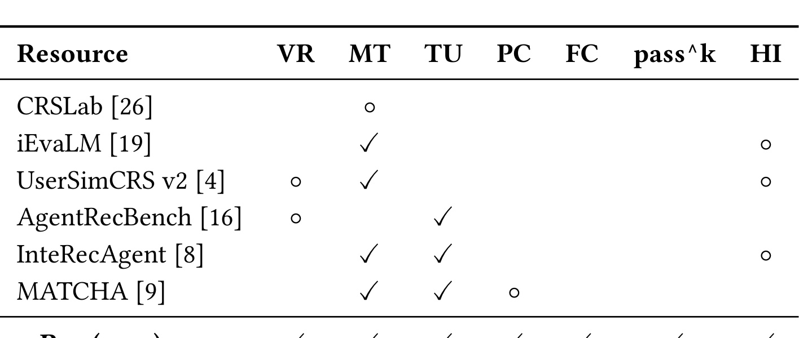
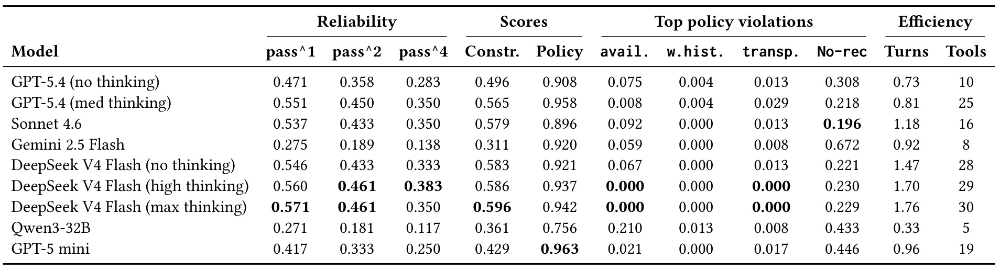
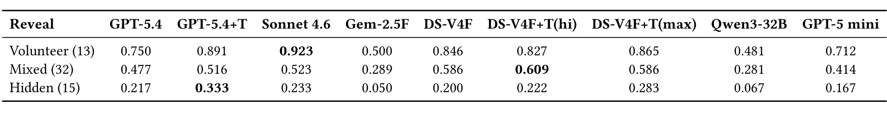
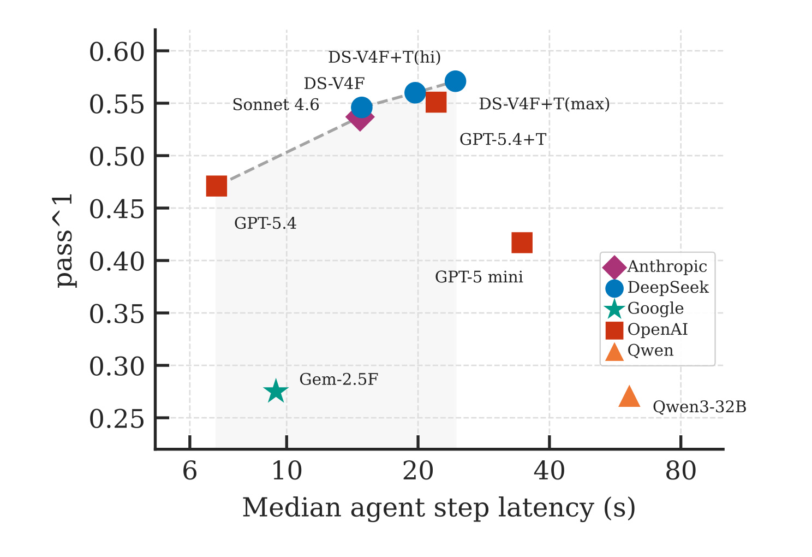

τ-Rec: A Verifiable Benchmark for Agentic Recommender Systems
这篇论文提出 τ-Rec，一个面向 agentic conversational recommender systems 的可验证评测基准。论文入口：arXiv:2606.10156。作者为 Bharath Sivaram Narasimhan 与 Karthik R Narasimhan；一作标注为 Independent Researcher，合作作者来自 Princeton University，本次自动化按任务分配目录命名为“普林斯顿-tauRec”。代码与数据仓库已核验为 nbharaths/tau-rec。它的核心主张很明确：当推荐系统从静态排序、单轮问答转向多轮对话、工具调用和渐进式偏好澄清时，用固定对话语料、Recall@k、BLEU 或 LLM-as-judge 已经不能稳定衡量系统是否真的完成推荐任务。τ-Rec 把一次推荐对话改写为可程序验证的任务：agent 必须通过工具查询真实目录、和模拟用户对话、遵守政策约束，并最终调用专门推荐工具提交一个电影；成功与否由结构化 catalog predicates 和 policy checks 判断，而不是让另一个大模型给印象分。
1. 背景和问题
推荐系统里的“对话化”和“大模型 agent 化”正在把评价问题推到一个尴尬位置。传统推荐评测默认系统面对的是静态用户表示、静态候选集和一次排序请求，指标可以是 Recall@k、NDCG@k、Hit Rate@N 或 AUC；早期 conversational recommender systems 虽然加入了自然语言对话，但很多数据集仍然是固定语料，模型在既有 dialogue 上复现参考回复，评测也常用 BLEU、相似度或固定正负样本排序。这样的设置适合比较生成流畅度或离线排序能力，却不适合判断一个 agent 能不能在真实会话里逐步追问、调用工具、验证库存、处理用户没说全的偏好，并在不确定时拒绝瞎推荐。
论文把已有范式分成两类问题。第一类是 static-dialogue camp，例如 INSPIRED、DuRecDial、OpenDialKG、CRSLab 这类资源，它们通常有固定标注对话和固定物品集合，评测重点落在文本匹配或静态候选排名上。这类数据容易受到记忆污染影响：大模型可能已经见过部分语料或物品分布，表面上能给出相似回答，却没有证明它在新的目录、工具接口和多轮偏好澄清里能完成任务。第二类是 LLM-as-judge camp，例如用大模型或人类偏好给对话质量打分。这类方法能覆盖更开放的交互，但代价高、方差大、评分标准不稳定，而且 judge 模型本身的偏好会进入结果。论文引用 Bernard 与 Balog 对 CRS 评价实践的批评：现有指标和真实用户满意度只弱相关。这意味着“看起来像一次好对话”和“推荐真的满足用户硬约束、可用性和政策要求”之间存在断层。
τ-Rec 想解决的不是“再做一个电影推荐数据集”，而是重新定义 agentic recommender system 的验收对象。一个现代推荐 agent 不只是生成自然语言回复，它可能先问用户想看什么类型，再调用 search_catalog 搜索目录，调用 get_metadata 查 runtime、rating、genres，调用 check_availability 检查流媒体服务，调用 get_user_history 排除已看过的影片，最后必须用 recommend(item id) 形式提交候选。只在聊天里说“我推荐某某电影”不算完成。这个细节非常重要，因为它把系统行为从自由文本转成可追踪的工具轨迹：评价者可以知道 agent 是否真的查过可用性、是否用了用户历史、是否在无解任务里正确 abstain，而不是凭最终一句话猜测过程是否可靠。

Table 1 是论文背景章最关键的定位证据。它把已有 CRS evaluation resources 按七列比较：verifiable rewards、multi-turn dialogue、tool use、policy checks、fresh catalog、pass^k 和 hidden-intent simulation。可以看到，许多资源只覆盖其中一两个维度：CRSLab 一类资源偏固定对话和部分推荐评测，UserSimCRS v2 支持多轮模拟但没有工具和可验证政策，AgentRecBench 支持 agent 推荐但主要仍是单轮 ranking 风格，MATCHA 强调政策和安全但不是可复用 benchmark。τ-Rec 的差异在于把这些列放到同一个实验对象里：它既要求多轮对话，也要求工具调用；既要求 fresh catalog，也要求 hidden intent；既看能力，也看 pass^k 可靠性。这个表不只是“相关工作打勾”，而是在说明评测缺口来自维度组合不足。推荐 agent 的真实难点恰恰是这些维度同时出现时的耦合：用户不一定把条件一次说全，目录可能包含训练后才出现的物品，工具返回的信息需要组合，政策又要求系统不能为了完成推荐而忽略可用性、年龄、赞助披露或已观看历史。
论文把这个缺口命名为 agentic recommendation evaluation 的 reliability problem。一个模型可能在某些任务上成功一次，但如果同一个任务重跑四次，模型每次是否都能问到关键约束、查到正确属性、调用推荐工具并避开政策违规？传统平均成功率会掩盖这种不稳定性。比如一个模型在四次 trial 里成功两次，平均成功看起来不差，但生产系统面对的是每一次真实用户会话都需要可靠完成；只要某次漏问 hidden constraint 或忘记检查可用性，就会产生错误推荐。τ-Rec 因此把 pass^k 放到推荐评测里，强调 repeated success，而不是单次偶然命中。
还有一个背景点是 contamination defense。论文选择 TMDB 中 2025 到 2026 年的电影来构建目录，目的是减少主流 LLM 在预训练中见过完整答案的可能性。这和 LiveCodeBench 在代码任务里使用新题、SciNUP 在科学兴趣画像中强调新内容的思路相似。对推荐来说，这一步尤其必要，因为电影、书籍、商品、歌曲等目录数据高度公开，模型可能知道很多旧条目的流派、演员和剧情。如果评测目录大多是旧物品，模型即使不调用工具也可能凭记忆给出看似正确的推荐。τ-Rec 让 catalog 更新到训练后时间段，并要求每个任务的约束可以通过 typed schema 验证，试图把“知道世界知识”与“在当前目录和服务环境里完成任务”分开。
所以，这篇论文的问题意识可以概括为三层。第一层是主观评价不可复现：LLM-as-judge 的分数难以作为长期工程回归指标。第二层是静态推荐指标不覆盖交互过程：Recall@k 或 Hit Rate@N 不知道 agent 是否问过关键问题、是否调用过可用性检查。第三层是单次成功不等于部署可靠：agentic 系统的不确定性来自多轮对话、工具调用和用户信息逐步显露，必须用 repeated trials 衡量。τ-Rec 的方法部分就是围绕这三层逐一加结构：可验证奖励解决主观评分，reveal-tagged elicitation 解决偏好暴露，policy checks 解决行为合规，pass^k 解决可靠性。
2. 方法
2.1 用 TAU/POMDP 重新定义一次推荐交互
τ-Rec 的第一步不是直接写任务 JSON，而是把推荐对话建模为一个 tool-agent-user triad，也就是论文中说的 TAU loop。这里的 agent 是被测推荐系统，user 是由大模型扮演但受结构化任务约束的模拟用户，tools 是目录检索、元数据、可用性、用户历史和最终推荐接口。论文进一步把这个交互视为 partially observable Markov decision process。这个表述的重点不在于引入复杂强化学习算法，而在于强调 agent 看到的信息是不完整的：它能看到对话历史、已经调用工具得到的结果、工具暴露出来的 catalog metadata，却看不到用户完整约束集合，尤其看不到 hidden constraints。
在每一轮中，agent 的动作空间包含三类行为。第一类是自然语言 utterance，即向用户提问或说明当前理解；第二类是 catalog tool invocation，即用工具搜索、过滤、查元数据、查可用性、查历史偏好；第三类是 terminal recommend action，即通过专门推荐工具提交一个 item id。episode 的终止条件是 agent 提交推荐或达到最大轮数。论文仓库 README 进一步说明，每条 trace 会记录消息和工具调用交错序列，工具包括 search catalog、get metadata、check availability、get user history、check content preference 和 recommend。这里有一个容易被忽略但对评测很关键的规则：推荐只有在 agent 调用 recommend 工具时才登记，聊天里点名一个标题并不算提交。这样做会迫使 agent 把最终答案落到结构化物品 ID 上，避免评价器从自由文本中做模糊抽取。
Figure 1 在方法章中承担的是流程锚点：它把用户模拟器、推荐 Agent、目录工具和最终可验证检查放在同一条交互链路里，说明 tau-Rec 不是让模型直接输出一个自然语言推荐，而是要求模型在多轮约束暴露、工具检索和最终 recommend action 之间保持状态一致。把这张流程图放在这里，是为了让后面的 typed catalog predicates、policy checks 和 pass^k reliability 都能回到同一个执行闭环中理解。
这个建模改变了推荐任务的错误边界。传统离线推荐中，错误通常是“正样本没排到前面”或“排序指标低”。在 τ-Rec 里，错误可能发生在更早的过程：agent 没有问 runtime，导致给出过长电影；没有问服务平台，导致推荐用户无法观看的标题；没有调用用户历史，导致推荐已看过电影；在无解任务里仍然强行推荐；或在多轮拒绝中没有推断 hidden preference。这些错误都不一定能从最终文本质量看出来，但能从工具轨迹和结构化检查中定位。因此，TAU/POMDP 建模不是装饰性术语，而是把 benchmark 的核验粒度从“最后一句话是否像推荐”提升到“交互过程是否产生了可验证、可复现的状态转移”。
从工程角度看，这个设计也让 τ-Rec 更像一个小型推荐服务沙盒。agent 不能直接访问全量答案，它必须通过 API 工具看到目录的一部分；user simulator 不只是被动回答，它根据 persona、constraints 和 reveal tags 控制信息披露；evaluator 不再读自然语言判断好坏，而是读最后推荐的 item id、trace 和任务配置。这样的拆分对真实推荐链路有启发：如果线上 conversational recommender 要进入 A/B 或安全审计阶段，系统也需要把问答、检索、过滤、合规和最终推荐动作分开记录，否则很难解释错误来自偏好理解、候选召回、工具调用还是政策处理。
2.2 Verifiable rewards：把主观评价换成 typed catalog predicates
τ-Rec 的核心方法是 verifiable rewards。每个任务中的硬约束都被写成 typed catalog predicates，例如 runtime 小于等于 120，genres contains Comedy，content rating 属于 PG-13 或 G，streaming services 包含用户可用平台，vote average 达到阈值等。最终推荐一旦通过 recommend 工具提交，评价器就可以直接在 catalog schema 上检查该 item 是否满足所有约束。这个过程不需要大模型判断“这部电影是不是轻松喜剧”，因为 genres、runtime、rating、availability 等字段已经结构化。论文强调这让评分为 deterministic and reproducible，也让成本从多次 LLM judging 降到一次程序检查。
论文使用两个主要分数：constraint score 和 policy score。constraint score 关注推荐物品是否满足任务约束；policy score 关注 agent 在轨迹中是否违反政策。严格实验设置下，推荐只有在每个必需约束都满足、每个 active policy 都遵守时才算成功。headline reward 是二者乘积：
符号解释：(R_t) 表示任务 (t) 的最终二值或归一化奖励；(\operatorname{constraint_score}_t) 表示最终推荐在任务 (t) 的 catalog predicates 上是否满足所有硬约束；(\operatorname{policy_score}_t) 表示该 trial 的交互轨迹是否遵守任务激活的政策检查。乘积的含义是“物品正确”和“行为合规”缺一不可：如果推荐电影本身满足类型、时长和平台约束，但 agent 没有按政策调用推荐工具，或推荐了已观看内容，最终 reward 仍然归零；反过来，如果 agent 很礼貌、流程完整但推荐物品不满足硬约束，也不能通过。
这个乘积式奖励很朴素，却解决了 CRS 评测中一个常见混淆：对话质量、推荐正确性和行为合规经常被揉在一起由人类或 LLM 综合打分，导致很难知道模型到底错在哪里。τ-Rec 虽然用严格乘积作为主指标，但也报告 partial-credit decompositions，用来归因失败维度。比如 Table 2 中同时列出 constraint score、policy score、availability violation、watch history violation、transparency violation、no recommendation rate、turns 和 tools。这意味着研究者不仅能看到某模型 pass^1 低，还能知道它是经常不提交推荐、经常忽略可用性，还是工具调用太少导致约束满足率低。
这种奖励设计对推荐工程也有一个隐含要求：所有可评价维度必须先被结构化。论文选择电影域，是因为 TMDB 能提供 genres、runtime、content rating、release date、cast、director、vote average、streaming providers 等字段；这些字段足以覆盖任务里的许多硬约束。若迁移到电商、音乐、播客或新闻推荐，benchmark 设计者也必须先定义可验证 schema。没有 schema，就会退回 LLM-as-judge；schema 不完整，则会出现“用户在乎的约束无法核验”的盲区。因此 τ-Rec 的方法价值并不只是写了一个 reward function，而是把推荐任务拆成可审计字段、可执行工具和可复现检查三件事。
2.3 Reveal-tagged elicitation：控制偏好如何在对话里显露
如果所有约束都在第一轮直接告诉 agent，那么任务会退化成“已知偏好集合上的约束满足”。τ-Rec 引入 reveal-tagged elicitation，也就是 RTE，来让用户偏好按不同方式显露。每个 constraint 都带有 volunteer、on ask 或 hidden 标签。volunteer 表示用户会在开场主动说出该约束，例如“我想看一部短一点的喜剧”；on ask 表示只有当 agent 明确询问对应属性时用户才会说，例如 agent 问“你有时长偏好吗”；hidden 表示用户永远不直接说出该约束，只会拒绝违反它的推荐，agent 必须从拒绝中推断。
RTE 的重要性在于，它把推荐 agent 的能力分成两个阶段：偏好 elicitation 和 constrained reasoning。偏好 elicitation 要求 agent 主动问问题、根据用户回答更新任务状态、在遭遇拒绝时推断未明说偏好；constrained reasoning 要求 agent 在已知或部分已知约束下调用工具、组合结果、提交满足条件的候选。很多现有 benchmark 只考第二阶段，甚至把用户偏好完整写在 prompt 里。τ-Rec 认为这会高估 agentic recommender，因为真实用户往往不会一开始给出完整过滤条件，尤其不会把“我其实不想看 R 级”“我已经看过这部”“我只在某个平台订阅”全部显式列出。
RTE 还让任务难度可控。论文把 reveal difficulty 分为 volunteer、mixed、hidden 三类：volunteer tasks 暴露所有约束，mixed tasks 至少包含一个 on ask 约束，hidden tasks 至少包含一个用户不会明说的 hidden 约束。与此同时，任务还有 complexity 维度，由 constraint count 决定，分为 simple、medium、complex。最终 60 个任务覆盖 3 x 3 grid，其中有 20 个 simple、24 个 medium、16 个 complex；reveal difficulty 上有 13 个 volunteer、32 个 mixed、15 个 hidden。这个双轴分层让研究者能区分“约束多所以难”和“信息隐藏所以难”。如果一个模型在 volunteer 任务上很好、hidden 任务上急剧下降，说明它不是不会查目录，而是不擅长从多轮对话中发现未显式偏好。
RTE 里的 hidden 设计尤其贴近实际推荐体验。用户经常不会把所有限制前置说清楚，而是在看到不合适的推荐后说“不想看这个”“这个太长了”“这部我看过”“我没有这个平台”。如果系统只会在用户明说后过滤，它就会反复犯错；如果系统能从拒绝中识别约束类别，下一轮就应主动收窄候选或询问更具体的问题。τ-Rec 用 hidden constraints 把这种能力变成可测项目。它不会要求 simulator 暴露答案，而是让 agent 在 rejection signals 中学习，这比一次性 preference dump 更能逼出 agent 的交互策略。
不过，RTE 也带来一个需要注意的边界：user simulator 必须稳定执行 reveal tags。如果 simulator 偶尔提前泄露 hidden constraint，或对 on ask 判断不一致，评测方差会被放大。论文选择 GPT-5 mini 作为 simulator，并在仓库中用结构化任务文件约束 persona、constraints、soft preferences、policy flags、no valid recommendation、complexity、reveal difficulty、user id 和 user history。也就是说，RTE 不是纯自然语言角色扮演，而是“结构化任务控制下的大模型模拟”。这种混合设计保留了多轮语言交互的开放性，同时把评分所需的硬约束锁在 JSON 中。
2.4 pass^k：把一次成功改成重复可靠性
τ-Rec 借鉴 τ-bench，把 pass^k 引入推荐 agent 评测。论文中的 pass^k 表示 agent 在同一任务的 (k) 次独立 trial 中全部成功的概率，而不是普通平均成功率。对于每个任务 (t)，假设总共运行 (n_t) 次 trial，其中成功 (c_t) 次，则组合估计器写成：
符号解释：(T) 是任务集合；(t) 是其中一个任务；(n_t) 是任务 (t) 的 trial 总数；(c_t) 是该任务成功 trial 的数量；(k) 是要求连续成功的 trial 数；(\binom{c_t}{k}) 表示从成功 trial 中选出 (k) 次的组合数；(\binom{n_t}{k}) 表示从所有 trial 中选出 (k) 次的组合数。这个比值估计的是：如果随机抽取 (k) 次同任务 trial，它们全部成功的概率。对所有任务求平均后，得到模型在整个 benchmark 上的 repeated success reliability。
这个指标比平均成功率更严厉。pass^1 近似衡量单次 capability：模型有没有能力在一个 trial 中完成任务。pass^2、pass^4 则衡量 consistency：模型是否能稳定地在多次独立交互中都完成。由于 agentic recommender 的轨迹很容易因为提问顺序、工具调用和 simulator 回答出现分支，单次成功可能是偶然的。例如一个模型某次刚好问到 streaming service，下一次却先推荐再补查，前者成功后者失败。平均成功率会把这种不稳定平滑成一个中间数，而 pass^4 会显著下降，直接暴露可靠性悬崖。
论文在摘要和实验中强调“best model about 57% pass^1 and roughly mid-30% pass^4”。这句话的工程含义是：即使最强模型也只能在单次会话中成功约一半多一点，要求同一任务四次都成功时又大幅下降。对于线上推荐 agent，这意味着“能完成 demo”与“能作为用户可依赖功能”之间还有距离。推荐系统通常要面对大量用户和高频请求，错误推荐不仅影响点击率，也可能触发合规、安全或商业风险。pass^k 给了研究者一个比单次命中率更贴近服务可靠性的维度。
pass^k 还有一个分析优势：它能放大不同失败模式的差异。hedging 模型可能经常不提交推荐，单次成功率不高，pass^k 更低；bluffing 模型可能经常提交但违反约束，随着重复 trial 增多也会被惩罚；balanced 模型则需要既调用足够工具，又避免过度拖延，才能在 repeated trials 中保住分数。Table 2 里 No-rec、availability violation、tool calls 和 pass^k 的组合正是为了支持这种分析。单看 pass^1，不容易判断模型是保守还是鲁莽；把 pass^4 与失败维度放在一起，才知道 reliability cliff 的来源。
2.5 Policy enforcement 与工具闭环
τ-Rec 不只检查最终推荐物品是否满足用户偏好，还把 policy compliance 作为 first-class objective。每个任务可以激活若干 policy flags，论文列出七类：recommend tool、watch history、availability、age restricted、sponsored、transparency 和 single recommendation。recommend tool 要求 agent 必须通过专门工具提交推荐，不能只在自由文本里说答案；watch history 要求不要推荐用户已经看过的内容；availability 要求推荐必须在用户可用 streaming services 上可看；age restricted 要求对年轻 persona 门控成人内容；sponsored 要求披露赞助内容；transparency 要求无解任务中明确 abstain，而不是硬编一个不存在的推荐；single recommendation 要求返回单个具体推荐，而不是一串模糊候选。
这些 policy checks 的加入让 τ-Rec 和传统推荐指标有明显区别。许多离线推荐实验只关心候选是否 relevant，甚至默认用户能接触到所有物品；真实对话推荐却经常受到服务可用性、历史消费、商业披露和安全边界约束。一个 agent 如果推荐了用户没有订阅平台上的影片，约束看似接近、用户体验却失败；如果推荐已看过内容，说明它没有正确使用 user history；如果面对 no-valid-recommendation task 仍然编造推荐，就暴露了 transparency 问题。τ-Rec 把这些行为从“产品层面再说”提前纳入 benchmark，是论文对 responsible AI recommendation 的主要贡献之一。
工具闭环是 policy enforcement 能成立的前提。agent 需要通过 check availability 获得流媒体可用性，通过 get user history 查看历史，通过 recommend 工具提交最终物品。trace 记录了这些动作，policy checker 才能判断 agent 是否遵守流程。比如 recommend tool policy 不能只看最终物品，它要看轨迹里是否出现了推荐工具调用；availability policy 既可以检查最终物品字段，也可以结合轨迹判断 agent 是否有机会知道平台信息。论文仓库 README 中说每个 trial 的 ConversationTrace 会写入 messages 和 tool calls，正是为了让失败诊断可复现。
这个设计也让 τ-Rec 适合做回归测试。假设研究者修改 agent prompt 或工具策略后重新跑 benchmark，他们不仅能比较 pass^1，还能看 availability violation 是否下降、No-rec 是否上升、median tools 是否过高、turns 是否变长。如果新策略提升约束分却导致政策分下降，reward 乘积会惩罚它；如果新策略大幅增加工具调用但 pass^k 没有改善，Figure 1 这种 latency frontier 分析会暴露效率问题。对 agentic recommender 来说，这比单一“成功率”更有调参价值。
当然，policy enforcement 的覆盖范围取决于政策文件和 checker 实现。论文当前覆盖电影推荐中的常见合规与体验问题，但没有声称覆盖所有安全风险。比如更复杂的用户敏感属性、公平性、多目标商业约束、长期满意度、跨会话记忆权限等，都需要额外 schema 和 checker。τ-Rec 的贡献是提供了一个结构：把 policy 写成任务激活的 flags，把检查函数接到 trace 和 catalog 上，把 policy score 与 constraint score 一起进入 reward。这个结构可迁移，但每个行业都要重新定义可审计政策。
2.6 Catalog 与任务构造：让可验证约束有稳定数据底座
τ-Rec 的 catalog 来自 TMDB public REST API。论文把构建流程分为三阶段。Stage 1 是 discovery：查询 TMDB discover movie endpoint，用 2025 到 2026 年 release date filters 抽取训练后时间段的电影，并按 popularity 和 vote count 排序，确保条目有足够元数据。Stage 2 是 enrichment：对候选电影追加 full metadata，包括 genre tags、runtime、MPAA-style content rating、cast、director、vote average、vote count、release date，以及每个区域的 streaming provider information。Stage 3 是 normalization and validation：把记录归一到 typed schema，轻度去重，并过滤缺少 task-relevant attributes 的条目。
这个三阶段流程和 verifiable rewards 是互相依赖的。没有 genres、runtime、content rating、streaming services、rating 这些字段，就无法写出可程序验证的 predicates；字段质量不稳定，任务就可能出现“用户要求短片但 catalog 里 runtime 缺失”的不可判定状态。论文当前 catalog 有 153 movies，规模故意不大，目的是隔离 reasoning ability 和 retrieval scale。agent 通过 API 工具访问目录，目录大小对模型本身是 opaque 的；如果任务失败，主要反映 elicitation、tool use、constraint reasoning 或 policy behavior，而不是大规模召回系统的覆盖率问题。
任务构造也采用结构化协议。每个 task 包含 persona、constraints、soft preferences、policy flags、no valid recommendation 标记、complexity、reveal difficulty、user id 和 user history。persona 负责让 simulator 的语言行为更像用户，例如 tired parent looking for something light after the kids go to bed；constraints 才是硬评分对象，例如 runtime bound、genres、content rating allow-list、minimum vote average、required streaming services。soft preferences 用于风格化回复，但不计入硬分。这个区分很重要：真实用户会说很多偏好，其中有些是硬约束，有些只是倾向；benchmark 必须明确哪些进入 scorer，哪些只影响对话自然度。
任务集中还有 5 个 no-valid-recommendation tasks。这类任务没有任何 catalog item 满足完整约束，目的是测试 agent 是否能正确 abstain。对推荐 agent 来说，无解判断比普通推荐更难，因为系统可能倾向于给出“最接近”的候选以结束对话；但在政策上，如果用户要求不可满足，透明地说明没有合适推荐比硬编答案更安全。τ-Rec 把 no valid recommendation 纳入任务集，说明它评测的不是“总能说一个标题”，而是“知道何时不该推荐”。这一点对广告、金融、健康、未成年人内容等高风险推荐尤其有意义。
仓库实现层面，τ-Rec 提供 validate、run、report 三类主要命令。validate 检查任务在 catalog 中是否有至少一个满足电影，或在 no-valid-recommendation 任务中确认为零；run 通过 LiteLLM 跑 agent 模型、simulator、tools 和 orchestrator，输出 trial results、task results 和 traces；report 计算 pass^1、pass^2、pass^4、bootstrap confidence intervals、按 complexity 和 reveal difficulty 的分解、policy violation frequency 和 efficiency stats。这个工具链让论文不是只报告一次实验，而是给后来研究者一个可复现实验框架。任何 LiteLLM 支持的模型理论上都可以作为 agent 或 simulator 接入，也可以用 no-tools ablation 测量 agent 到底依赖 retrieval 还是记忆。
方法整体看下来，τ-Rec 的新意不是某个复杂模型，而是把推荐 agent 评测的各个环节连接成闭环：新鲜目录降低记忆污染，结构化任务给出可验证约束，RTE 控制约束暴露，工具接口让 agent 的过程可追踪，policy flags 检查行为合规，pass^k 衡量重复可靠性。它更像一个基准工程，而不是推荐算法模型。对研究者来说，它提供了一个“现有 agentic recommender 到底差在哪里”的显微镜；对工程团队来说，它提示上线 conversational recommender 前必须把过程日志、工具调用、无解处理和政策检查做成可回放对象。
3. 实验结果
论文评测了九个配置，覆盖六个基础模型或模型族：GPT-5.4、Claude Sonnet 4.6、Gemini 2.5 Flash、DeepSeek V4 Flash、Qwen3-32B 和 GPT-5 mini。其中 GPT-5.4 有 no thinking 与 medium thinking 两种配置，DeepSeek V4 Flash 有 no thinking、high thinking、max thinking 三种配置。所有模型在 60 个任务上各跑 4 trials，用户模拟器使用 GPT-5 mini；agent 模型在支持时设置 temperature 为 0，simulator 使用 temperature 为 1.0。这个设置强调 agent 侧尽量 deterministic，而用户侧保留一定自然语言变化，以模拟多轮交互不确定性。

Table 2 是整篇论文的主结果。最醒目的结论是 reliability cliff：最佳单次能力也只在 0.57 左右。DeepSeek V4 Flash max thinking 的 pass^1 为 0.571，是表中最高；DeepSeek V4 Flash high thinking pass^1 为 0.560、pass^4 为 0.383，是重复可靠性最高的配置；GPT-5.4 medium thinking pass^1 为 0.551、pass^4 为 0.350；Sonnet 4.6 pass^1 为 0.537、pass^4 为 0.350。也就是说，头部模型在单次会话中勉强超过一半任务成功，但当要求同一任务四次都成功时，分数下降到 0.35 到 0.38 区间。这个结果支持论文的核心判断：agentic recommendation 的能力瓶颈不只是“懂不懂电影”，而是多轮追问、工具使用、约束组合和政策执行的稳定性。
Table 2 也揭示了不同模型的失败模式。Qwen3-32B 的 policy score 只有 0.756，availability violation rate 为 0.210，说明它更容易推荐用户无法观看的标题；这类错误不是语言能力问题，而是工具和约束执行问题。Gemini 2.5 Flash 的 No-rec rate 达到 0.672，GPT-5 mini 也有 0.446，说明这些模型更容易 abstain 或没有提交推荐。论文把这类模型称为 abstainers：它们可能避免错推，却牺牲了任务完成。另一类是 wrong committers，典型如 Qwen3-32B，提交推荐但违反约束。较强的 balanced models，如 DeepSeek V4 Flash、GPT-5.4 with thinking、Sonnet 4.6，会投入更多工具调用和对话轮次，在 constraint score 上达到 0.57 到 0.60 附近，但它们也没有消除 pass^k 下降。
工具调用和效率列让结果更具体。DeepSeek V4 Flash variants 的 median tool calls 达到 28 到 30，Sonnet 4.6 为 16，GPT-5.4 medium thinking 为 25，GPT-5 mini 为 19；而 Qwen3-32B 只有 5，Gemini 2.5 Flash 为 8。工具调用少的模型往往 No-rec 高或约束分低，说明它们没有充分探索 catalog 和用户状态。工具调用多的模型 constraint score 更高，但 turns 和 latency 也会增加。τ-Rec 因此不是简单奖励“多查工具”，而是让研究者看到工具使用、完成率、政策违规和成本之间的真实 trade-off。一个生产 agent 不能只追求 pass^1，也不能无限增加工具调用和对话轮数，否则用户体验和系统成本会受影响。

Table 3 直接验证 RTE 机制是否真的改变难度。DeepSeek V4 Flash 在 volunteer tasks 上 pass^1 为 0.846，mixed tasks 为 0.586，hidden tasks 只有 0.200；GPT-5 mini 从 0.712 降到 0.414 再到 0.167；Qwen3-32B 从 0.481 降到 0.281 再到 0.067。这个梯度说明 hidden constraints 不是装饰性标注，而是把任务从“已知约束满足”推向“偏好推断”。当用户主动说出所有条件时，强模型可以通过工具和 catalog predicates 完成较多任务；当约束需要提问或从拒绝中推断时，模型的成功率明显下降。对推荐系统研究来说，这个结果提醒我们：只在完整偏好输入下测 ranking 或 candidate selection，会高估 conversational agent 的实际能力。
Table 3 还有一个细节值得看：不同模型在 volunteer 上的差距不等于 hidden 上的差距。Sonnet 4.6 volunteer 为 0.923，是表中最高之一，但 hidden 只有 0.233；DeepSeek V4 Flash max thinking volunteer 为 0.865，hidden 为 0.283；Gemini 2.5 Flash volunteer 为 0.500，hidden 为 0.050。说明 hidden 场景不仅需要知识和推理，也需要对“用户拒绝意味着什么”有稳定策略。模型如果没有主动追问或反思拒绝原因，就会在 hidden tasks 中反复试错或过早放弃。RTE 给了研究者一个可分解维度：未来改进可以专门优化 elicitation policy，而不是把所有失败都归为大模型能力不足。

Figure 1 把 pass^1 和 median agent step latency 放在一起看。GPT-5.4 no thinking 位于快端，约 7 秒每步，pass^1 约 0.47；Sonnet 4.6 和 DeepSeek V4 Flash variants 在更高 latency 区间形成能力前沿，DeepSeek max thinking 达到约 0.57 pass^1。GPT-5 mini、Qwen3-32B、Gemini 2.5 Flash 则被前沿模型支配：它们在相似或更短延迟下没有给出更高能力。图中的 thinking modes 呈现浅的、次线性的收益，例如 DeepSeek V4 Flash 从 no thinking 到 max thinking 只增加约 0.025 pass^1，却增加延迟。这说明当前模型在 τ-Rec 上更像 capability constrained，而不是只要增加 thinking budget 就能解决。
从实验整体看，τ-Rec 的结果比“排行榜谁第一”更有价值。首先，主结果表显示 top tier 模型差距不大且 confidence intervals 重叠，论文没有过度宣称某个模型绝对领先。其次，policy score 和 violation rates 让模型画像更细：有的模型保守不推荐，有的模型大胆但不查可用性，有的模型工具使用多但延迟高。第三，reveal difficulty 表明任务设计能区分偏好显露难度。第四，latency frontier 把部署成本纳入讨论。这样的结果结构适合后续做 agent prompt、tool policy、simulator calibration、catalog expansion 或模型微调的定位实验。
需要注意的是，论文当前实验规模仍然有限。60 个任务、每任务 4 trials 能揭示明显趋势，但 pass^4 的 95% bootstrap confidence intervals 达到约 ±0.10 到 ±0.13，区分接近模型需要更多 trials 或更多任务。catalog 只有 153 movies，目的是隔离推理和工具能力，但也限制了失败模式多样性。单一电影域不能代表电商、短视频、新闻、音乐或本地生活推荐。尽管如此，这些限制没有削弱 τ-Rec 作为 benchmark prototype 的意义：它证明了可验证、多轮、工具化、policy-aware 的推荐 agent 评测可以落地，并且能暴露当前模型在可靠性上的不足。
4. 总结
我对 τ-Rec 的判断是：它更像“推荐 agent 评测协议”而不是“电影推荐榜单”。它的贡献不是提出新排序模型，而是把 agentic recommender 的关键风险拆成可测维度：偏好是否被正确 elicited，工具是否被正确调用，最终 item 是否满足 typed predicates，轨迹是否遵守 policy，重复 trial 是否稳定。对做大模型推荐、搜索助手、导购助手或内容推荐对话系统的人来说，这个 benchmark 的价值在于提醒我们，demo 中的一次顺滑对话远远不够；只要 hidden preference、availability、watch history、no-valid recommendation 和 tool submission 进入场景，系统就需要过程级评测。
工程复现上，我会优先关注四件事。第一，先跑仓库里的 validate 命令，确认 catalog 与 tasks 的 answer sets 没有漂移，因为 verifiable reward 的前提是每个任务可判定。第二，保留完整 traces，而不是只保存最终分数；τ-Rec 的失败诊断高度依赖消息和工具调用序列。第三，把 no-tools ablation 作为必要对照，区分模型记忆和工具依赖。第四，报告 pass^1、pass^2、pass^4 时同步报告 policy violations、No-rec、turns 和 tools，否则很容易把保守 abstain 或鲁莽 commit 都误读成单一能力问题。
局限至少有四点。第一，catalog 小且只有电影域，无法覆盖大规模候选召回、冷启动、多模态内容理解和跨域偏好迁移。第二，simulator 仍由 LLM 驱动，虽然受结构化 constraints 约束，但用户行为真实性和 reveal consistency 仍需更多校准。第三，每任务 4 trials 对 pass^4 仍偏少，confidence intervals 较宽，模型间细微差距不应过度解读。第四，policy checks 当前是电影推荐场景的有限集合，真实平台还会有隐私、商业排序、公平性、长期满意度和未成年人保护等更复杂约束。第五，constraint predicates 依赖 catalog 字段质量，若迁移到字段噪声更大的领域，验证器本身也要面对不确定性。
后续跟进可以沿三条线推进。第一，扩展 domain：把同一协议迁移到音乐、书籍、电商或短视频，观察 hidden constraints 和 policy flags 是否仍然能区分模型。第二，扩展 task scale 和 trial scale：增加任务数、每任务 trial 数和更细的 reveal patterns，让 pass^k 更稳定。第三，改进 agent policy：专门训练或提示 agent 在早期询问关键约束、在拒绝后归因 hidden preference、在提交前执行 availability 与 history check。第四，把 τ-Rec 接入 CI 回归：每次改 prompt、tool schema 或模型版本后跑小规模 smoke，再定期跑 full benchmark。这样，τ-Rec 不只是论文里的评测表，而可以成为 conversational recommender 上线前的可靠性门槛。